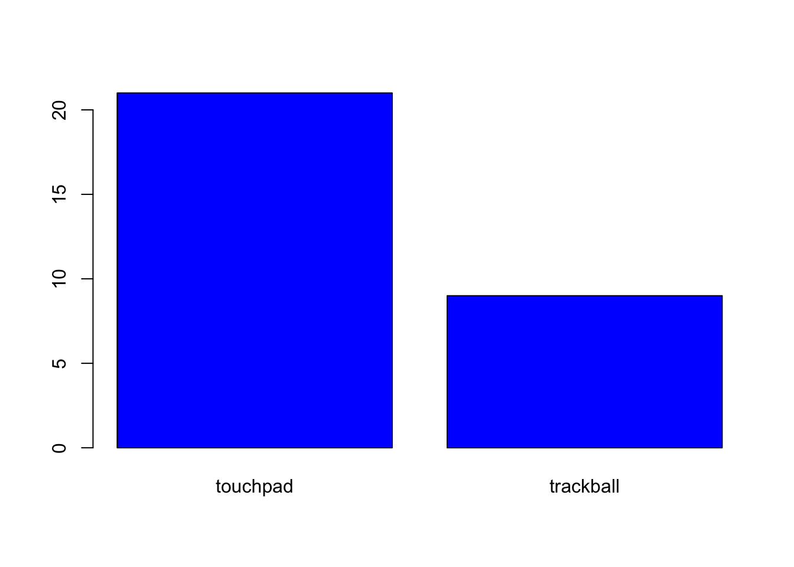
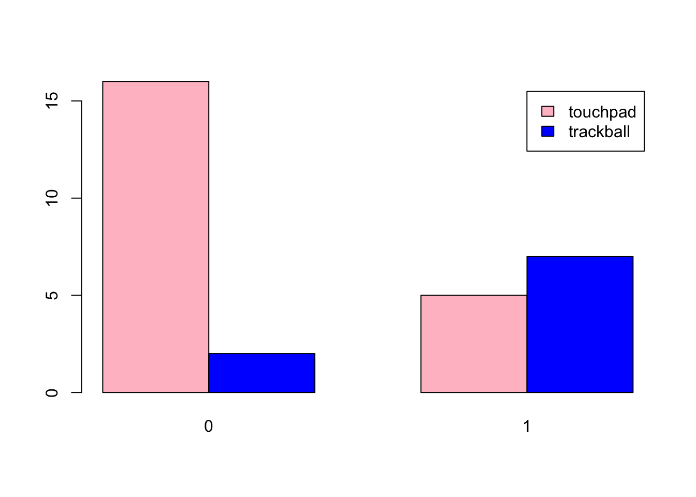

The user research team conducted an experiment design to find out whether disability has an effect on the device preference. There are two groups of users, one with disability and another without. They were asked to use two different devices, touchpads and trackballs as computer input devices, and pick their preference. Now that the data is collected, the objective is to conduct a statistical testing to see whether disability has a signifcant effect on device preference.
Assumptions about the dataset:
df.device = read_csv("csv/deviceprefs.csv")## Parsed with column specification:
## cols(
## Subject = col_double(),
## Disability = col_double(),
## Pref = col_character()
## )df.device# Transform dtype.
df.device$Pref = factor(df.device$Pref)
df.device$Disability = factor(df.device$Disability)
# Summarise the dataset.
summary(df.device)## Subject Disability Pref
## Min. : 1.00 0:18 touchpad :21
## 1st Qu.: 8.25 1:12 trackball: 9
## Median :15.50
## Mean :15.50
## 3rd Qu.:22.75
## Max. :30.00The overview includes the following:
dataset_detail = function(df) {
na_count = colSums(is.na(df))
# Details.
nulls_proportion = na_count / nrow(df) * 100
duplicated_nrows = nrow(which(duplicated(df)))
details = list(nulls_proportion, duplicated_nrows)
names(details) = c("nulls_proportion", "duplicated_nrows")
return(details)
}
df.device.details = dataset_detail(df.device)
df.device.details## $nulls_proportion
## Subject Disability Pref
## 0 0 0
##
## $duplicated_nrows
## NULLtable.pref = xtabs(~ Pref, data=df.device)
table.pref ## Pref
## touchpad trackball
## 21 9barplot(table.pref, col='blue')
table.pref.disability = xtabs(~ Pref + Disability, data=df.device)
table.pref.disability## Disability
## Pref 0 1
## touchpad 16 5
## trackball 2 7barplot(table.pref.disability, col=c('pink', 'blue'), legend=rownames(table.pref.disability), beside=TRUE)
Findings from section 1.1:
Findings from section 1.2:
Findings from section 1.3 to 1.6:
Next steps:
The data is based on proportion, thus I will perform proportion tests. I will first test the Pref variable to see if the users generally prefer one device over the other. There are a few testing methods for proportion, however, I will go with these common methods:
The tests above must satisfy the following conditions:
Null hypothesis: P(Trackpad) = P(Trackball)
Alternative hypothesis: P(Trackpad) ≠ P(Trackball)
Significant level: 0.05
# Contigency table.
table.pref## Pref
## touchpad trackball
## 21 9prop.result = prop.test(table.pref, p=0.5)
prop.result##
## 1-sample proportions test with continuity correction
##
## data: table.pref, null probability 0.5
## X-squared = 4.0333, df = 1, p-value = 0.04461
## alternative hypothesis: true p is not equal to 0.5
## 95 percent confidence interval:
## 0.5044209 0.8458720
## sample estimates:
## p
## 0.7Null hypothesis: P(touchpad) = P(Trackball)
Alternative hypothesis: P(touchpad) ≠ P(Trackball)
Significant level: 0.05
binom.test(table.pref, p=0.5) ##
## Exact binomial test
##
## data: table.pref
## number of successes = 21, number of trials = 30, p-value =
## 0.04277
## alternative hypothesis: true probability of success is not equal to 0.5
## 95 percent confidence interval:
## 0.5060410 0.8526548
## sample estimates:
## probability of success
## 0.7The results show that there is a significant different between the proportion of device preference with a borderline p-value of 0.04, with a confidence level of 95%. 70% of the users prefer touchpad over trackball.
Moving on to two-sample test.
These are the testing methods I will implement:
The tests above must satisfy the following conditions:
Note that Chi-Square and G test are based on asymptotic distribution, meaning the p-value will only be an approximation, not exact. This can be resolved by increasing the sample size. I will perform the test and see whether there is any reliability issue raised when implementing the tests although Chi-Square most likely will. Otherwise, I will go with the result from Fisher test.
Null hypothesis: Preference is independent of disability variable.
Alternative hypothesis: Preference is dependent of disability variable.
Significant level: 0.05
# Contigency table.
table.pref.disability## Disability
## Pref 0 1
## touchpad 16 5
## trackball 2 7chisq.result = chisq.test(table.pref.disability)## Warning in chisq.test(table.pref.disability): Chi-squared
## approximation may be incorrectchisq.result##
## Pearson's Chi-squared test with Yates' continuity correction
##
## data: table.pref.disability
## X-squared = 5.5622, df = 1, p-value = 0.01835chisq.result$expected## Disability
## Pref 0 1
## touchpad 12.6 8.4
## trackball 5.4 3.6Null hypothesis: Preference is independent of disability variable.
Alternative hypothesis: Preference is dependent of disability variable.
Significant level: 0.05
library(RVAideMemoire)
G.test(table.pref.disability)##
## G-test
##
## data: table.pref.disability
## G = 7.7933, df = 1, p-value = 0.005244Null hypothesis: Preference is independent of disability variable.
Alternative hypothesis: Preference is dependent of disability variable.
Significant level: 0.05
fisher.test(table.pref.disability)##
## Fisher's Exact Test for Count Data
##
## data: table.pref.disability
## p-value = 0.01251
## alternative hypothesis: true odds ratio is not equal to 1
## 95 percent confidence interval:
## 1.365946 131.289256
## sample estimates:
## odds ratio
## 10.13342chisq.result$expected / 30## Disability
## Pref 0 1
## touchpad 0.42 0.28
## trackball 0.18 0.12Findings:
All tests reject the null hypothesis, but I will go with G test and Fisher Exact test instead since Chi-Square test encounters an issue. I will conduct a post-hoc test on each device based on Disability variable to see whether there is a significant difference between each device for disabled and non-disabled users.
# Non-disabled users on touchpad.
binom.test(x=sum(df.device[df.device$Disability == 0, ]$Pref == "touchpad"), n=sum(df.device$Disability == 0), p=1/2,
alternative='two.sided', conf.level=0.95)##
## Exact binomial test
##
## data: sum(df.device[df.device$Disability == 0, ]$Pref == "touchpad") and sum(df.device$Disability == 0)
## number of successes = 16, number of trials = 18, p-value =
## 0.001312
## alternative hypothesis: true probability of success is not equal to 0.5
## 95 percent confidence interval:
## 0.6528796 0.9862488
## sample estimates:
## probability of success
## 0.8888889# Disabled users on touchpad.
binom.test(x=sum(df.device[df.device$Disability == 1, ]$Pref == "touchpad"), n=sum(df.device$Disability == 1), p=1/2,
alternative='two.sided', conf.level=0.95)##
## Exact binomial test
##
## data: sum(df.device[df.device$Disability == 1, ]$Pref == "touchpad") and sum(df.device$Disability == 1)
## number of successes = 5, number of trials = 12, p-value =
## 0.7744
## alternative hypothesis: true probability of success is not equal to 0.5
## 95 percent confidence interval:
## 0.1516522 0.7233303
## sample estimates:
## probability of success
## 0.4166667barplot(table.pref.disability, col=c('pink', 'blue'), legend=rownames(table.pref.disability), beside=TRUE)Based on the outcome from post-hoc test, there is a significant result showinng that non-disabled users prefer touchpad over trackball with a p-value of 0.001, whereas disabled users show no significant preference (p-value of 0.774) toward either device.
Assuming the user research team is looking for a medium effect size detection 0.3 to ensure the preference proportion is impactfully different. I can calculate the required sample size in order to conduct a more reliable Chi-Square test with medium effect size. Also, assuming the team wants to have a much higher chance of detecting the significant effect with a power of 95% and a significant level of 5%.
cohen.ES(test="chisq", size="medium")##
## Conventional effect size from Cohen (1982)
##
## test = chisq
## size = medium
## effect.size = 0.3pwr.chisq.test(w=0.3, power=0.95, df=1, sig.level=0.05)##
## Chi squared power calculation
##
## w = 0.3
## N = 144.3857
## df = 1
## sig.level = 0.05
## power = 0.95
##
## NOTE: N is the number of observations145 sample size is too huge. It’s difficult and costly to find so many users to partcipate for the test. Hence, we may have to reduce the power to 80% and increase the effect size detection to 0.4.
pwr.chisq.test(w=0.4, power=0.8, df=1, sig.level=0.05)##
## Chi squared power calculation
##
## w = 0.4
## N = 49.05538
## df = 1
## sig.level = 0.05
## power = 0.8
##
## NOTE: N is the number of observationsThe result shows that user research team should gather at least 50 users for testing to ensure a 80% chance of detecting a significant effect with a minimum of 0.4 effect size detection.
We can conclude that disability seems to have dependent effect on device prefence. Non-disabled users generally prefer touchpad while disabled users have no significant preference over either device. We can follow up with the disabled users to find out why they have no particular preference over either device. However, it might also due to small sample size as there is only 12 disabled users conducting the test. Perhaps if the UX research team were to increase the sample size, the result might be different. If not, more reliable.
I will say that the result for disabled users doesn’t have strong reliability due to small samples size. However, I can reliably say that non-disabled users prefer touchpad. Additionally, apart from taking the disability variable into account, the one-sample test result shows that users generally prefer touchpad with a borderline p-value of 0.04.
Latest update: 2020/02/05
List of things to take note:
—————————————————– END ——————————————————